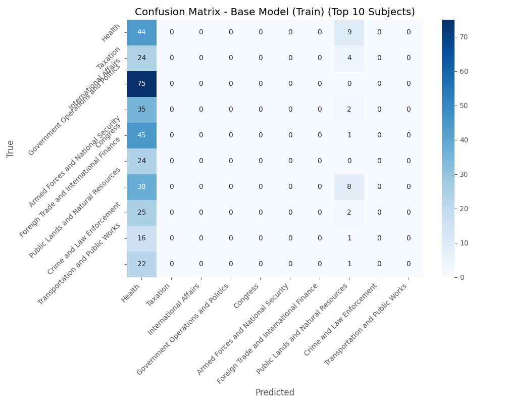

Bill Classification Model Evaluation Report
Generated on: 2025-03-18 13:34:00
Executive Summary
This report compares the performance of the base DistilBERT model and the fine-tuned model on the task of classifying bill subjects based on their features.
Performance Overview
Base Model (Train)
| Metric | Value |
|---|---|
| Accuracy | 0.0295 |
| Precision | 0.0105 |
| Recall | 0.0295 |
| F1 Score | 0.0142 |
| ROUGE-L | 0.0782 |
| BERTScore | 0.2464 |
Fine-tuned Model (Train)
| Metric | Value |
|---|---|
| Accuracy | 0.8285 |
| Precision | 0.8297 |
| Recall | 0.8285 |
| F1 Score | 0.8269 |
| ROUGE-L | 0.8388 |
| BERTScore | 0.8598 |
Base Model (Test)
| Metric | Value |
|---|---|
| Accuracy | 0.0258 |
| Precision | 0.0039 |
| Recall | 0.0258 |
| F1 Score | 0.0062 |
| ROUGE-L | 0.0932 |
| BERTScore | 0.2219 |
Fine-tuned Model (Test)
| Metric | Value |
|---|---|
| Accuracy | 0.6000 |
| Precision | 0.6735 |
| Recall | 0.6000 |
| F1 Score | 0.6125 |
| ROUGE-L | 0.6377 |
| BERTScore | 0.6752 |
Performance Visualizations
Train Data Results
Accuracy and F1 Score Comparison

ROUGE-L and BERTScore Comparison

Confusion Matrices

Base Model (Train) - Top 10 Subjects

Fine-tuned Model (Train) - Top 10 Subjects
Test Data Results
Accuracy and F1 Score Comparison
ROUGE-L and BERTScore Comparison
Confusion Matrices
Base Model (Test) - Top 10 Subjects
Fine-tuned Model (Test) - Top 10 Subjects
Sample Predictions
Train Data - Sample Predictions
Base Model (Train)
| Input Text (truncated) | Ground Truth | Prediction | ROUGE-L | BERTScore |
|---|---|---|---|---|
| A bill to amend title II of the Social Security Act to improve the process for congressional consideration of international social security agreements. | Social Welfare | Public Lands and Natural Resources | 0.0000 | 0.2561 |
| A bill to further the conduct of research, development, and demonstrations in geothermal energy technologies, to establish a geothermal energy coordination and management project, to amend the Nationa... | Energy | Health | 0.0000 | 0.9948 |
| Employment Non-Discrimination Act of 1994 | Civil Rights and Liberties, Minority Issues | Arts, Culture, and Religion | 0.2000 | 0.0914 |
| A bill to provide that mining companies that discharge asbestos fibers into Lake Superior shall be required to pay for the cost of removal of such fibers from water used for public drinking purposes. | Environmental Protection | Economics and PublicFinance | 0.0000 | 0.0967 |
| Federal Housing Administration Safety and Soundness Act of 1989 | Housing and Community Development | Arts, Culture, and Religion | 0.2500 | 0.2427 |
| PATCH Act | Health | Arts, Culture, and Religion | 0.0000 | 0.1007 |
| A bill to amend the Ethics in Government Act of 1978 to require reporting of the exact value of items required to be disclosed. | Government Operations and Politics | Arts, Culture, and Religion | 0.2500 | 0.3258 |
| A bill to amend the Internal Revenue Code of 1954 to allow a deduction from gross income for social agency, legal and related expenses incurred in connection with the adoption of a child by the taxpay... | Taxation | Energy | 0.0000 | 0.2010 |
| To prohibit fees with respect to electronic benefit transfer debit cards used in connection with unemployment compensation. | Finance and Financial Sector | Health | 0.0000 | 0.0319 |
| Bruce Vento Hmong Veterans' Naturalization Extension Act | Immigration | Health | 0.0000 | 0.9738 |
Fine-tuned Model (Train)
| Input Text (truncated) | Ground Truth | Prediction | ROUGE-L | BERTScore |
|---|---|---|---|---|
| A bill to amend title II of the Social Security Act to improve the process for congressional consideration of international social security agreements. | Social Welfare | Social Welfare | 1.0000 | 1.0000 |
| A bill to further the conduct of research, development, and demonstrations in geothermal energy technologies, to establish a geothermal energy coordination and management project, to amend the Nationa... | Energy | Energy | 1.0000 | 1.0000 |
| Employment Non-Discrimination Act of 1994 | Civil Rights and Liberties, Minority Issues | Civil Rights and Liberties, Minority Issues | 1.0000 | 1.0000 |
| A bill to provide that mining companies that discharge asbestos fibers into Lake Superior shall be required to pay for the cost of removal of such fibers from water used for public drinking purposes. | Environmental Protection | Environmental Protection | 1.0000 | 1.0000 |
| Federal Housing Administration Safety and Soundness Act of 1989 | Housing and Community Development | Housing and Community Development | 1.0000 | 1.0000 |
| PATCH Act | Health | Health | 1.0000 | 1.0000 |
| A bill to amend the Ethics in Government Act of 1978 to require reporting of the exact value of items required to be disclosed. | Government Operations and Politics | Government Operations and Politics | 1.0000 | 1.0000 |
| A bill to amend the Internal Revenue Code of 1954 to allow a deduction from gross income for social agency, legal and related expenses incurred in connection with the adoption of a child by the taxpay... | Taxation | Taxation | 1.0000 | 1.0000 |
| To prohibit fees with respect to electronic benefit transfer debit cards used in connection with unemployment compensation. | Finance and Financial Sector | Finance and Financial Sector | 1.0000 | 1.0000 |
| Bruce Vento Hmong Veterans' Naturalization Extension Act | Immigration | Immigration | 1.0000 | 1.0000 |
Test Data - Sample Predictions
Base Model (Test)
| Input Text (truncated) | Ground Truth | Prediction | ROUGE-L | BERTScore |
|---|---|---|---|---|
| Recovery of Stolen Checks Act | Taxation | Arts, Culture, and Religion | 0.0000 | -0.0152 |
| Strengthening Communities through Summer Employment Act | Labor and Employment | Health | 0.0000 | 0.1518 |
| Validate Prior Learning to Accelerate Employment Act | Labor and Employment | Health | 0.0000 | 0.1518 |
| All Access Act of 2025 | Congress | Health | 0.0000 | 0.9909 |
| Guidance Out Of Darkness Act or the GOOD Act | Government Operations And Politics | Arts, Culture, and Religion | 0.2500 | 0.3038 |
| Nutria Eradication and Control Reauthorization Act of 2025 | Animals | Arts, Culture, and Religion | 0.0000 | 0.1106 |
| Sea Turtle Rescue Assistance and Rehabilitation Act of 2025 | Animals | Health | 0.0000 | 0.9921 |
| DEBT Act | Economics and PublicFinance | Energy | 0.0000 | 0.0998 |
| Restoring Confidence in the World Anti-Doping Agency Act of 2025 | Sports and Recreation | Health | 0.0000 | 0.0685 |
| Agricultural and Forestry Hauling Efficiency Act | Transportation and Public Works | Arts, Culture, and Religion | 0.2500 | 0.1027 |
Fine-tuned Model (Test)
| Input Text (truncated) | Ground Truth | Prediction | ROUGE-L | BERTScore |
|---|---|---|---|---|
| Recovery of Stolen Checks Act | Taxation | Finance and Financial Sector | 0.0000 | -0.1115 |
| Strengthening Communities through Summer Employment Act | Labor and Employment | Labor and Employment | 1.0000 | 1.0000 |
| Validate Prior Learning to Accelerate Employment Act | Labor and Employment | Education | 0.0000 | 0.1540 |
| All Access Act of 2025 | Congress | Health | 0.0000 | 0.9909 |
| Guidance Out Of Darkness Act or the GOOD Act | Government Operations And Politics | Education | 0.0000 | 0.1139 |
| Nutria Eradication and Control Reauthorization Act of 2025 | Animals | Agriculture and Food | 0.0000 | -0.1392 |
| Sea Turtle Rescue Assistance and Rehabilitation Act of 2025 | Animals | Animals | 1.0000 | 1.0000 |
| DEBT Act | Economics and PublicFinance | Economics and PublicFinance | 1.0000 | 1.0000 |
| Restoring Confidence in the World Anti-Doping Agency Act of 2025 | Sports and Recreation | Sports and Recreation | 1.0000 | 1.0000 |
| Agricultural and Forestry Hauling Efficiency Act | Transportation and Public Works | Transportation and Public Works | 1.0000 | 1.0000 |
Detailed Metrics
Train Data - Model Comparison
| Metric | Base Model (Train) | Fine-tuned Model (Train) |
|---|---|---|
| Accuracy | 0.0295 | 0.8285 |
| Precision | 0.0105 | 0.8297 |
| Recall | 0.0295 | 0.8285 |
| F1 Score | 0.0142 | 0.8269 |
| ROUGE-1 | 0.0783 | 0.8392 |
| ROUGE-2 | 0.0020 | 0.5130 |
| ROUGE-L | 0.0782 | 0.8388 |
| BLEU | 0.0154 | 0.4523 |
| BERTScore | 0.2464 | 0.8598 |
Per-Class Performance
Base Model (Train)
| Class | Precision | Recall | F1 Score | Support |
|---|---|---|---|---|
| Agriculture and Food | 0.0000 | 0.0000 | 0.0000 | 58.0 |
| Animals | 0.0000 | 0.0000 | 0.0000 | 6.0 |
| Armed Forces and National Security | 0.0000 | 0.0000 | 0.0000 | 122.0 |
| Arts, Culture, and Religion | 0.0000 | 0.0000 | 0.0000 | 14.0 |
| Civil Rights and Liberties, Minority Issues | 0.0000 | 0.0000 | 0.0000 | 19.0 |
| Commerce | 0.0000 | 0.0000 | 0.0000 | 55.0 |
| Congress | 0.0000 | 0.0000 | 0.0000 | 135.0 |
| Crime and Law Enforcement | 0.0000 | 0.0000 | 0.0000 | 89.0 |
| Economics and PublicFinance | 0.0408 | 0.0364 | 0.0385 | 55.0 |
| Education | 0.0000 | 0.0000 | 0.0000 | 57.0 |
| Emergency Management | 0.0000 | 0.0000 | 0.0000 | 23.0 |
| Energy | 0.0227 | 0.1964 | 0.0407 | 56.0 |
| Environmental Protection | 0.0000 | 0.0000 | 0.0000 | 55.0 |
| Families | 0.0000 | 0.0000 | 0.0000 | 11.0 |
| Finance and Financial Sector | 0.0000 | 0.0000 | 0.0000 | 57.0 |
| Foreign Trade and International Finance | 0.0000 | 0.0000 | 0.0000 | 104.0 |
| Government Operations And Politics | 0.0000 | 0.0000 | 0.0000 | 0.0 |
| Government Operations and Politics | 0.0000 | 0.0000 | 0.0000 | 143.0 |
| Health | 0.0748 | 0.2292 | 0.1128 | 192.0 |
| Housing and Community Development | 0.0000 | 0.0000 | 0.0000 | 19.0 |
| Immigration | 0.0000 | 0.0000 | 0.0000 | 39.0 |
| International Affairs | 0.0000 | 0.0000 | 0.0000 | 145.0 |
| Labor and Employment | 0.0000 | 0.0000 | 0.0000 | 51.0 |
| Law | 0.0000 | 0.0000 | 0.0000 | 21.0 |
| Native Americans | 0.0000 | 0.0000 | 0.0000 | 15.0 |
| Public Lands and Natural Resources | 0.0333 | 0.0220 | 0.0265 | 91.0 |
| Science, Technology, Communications | 0.0000 | 0.0000 | 0.0000 | 30.0 |
| Social Sciences and History | 0.0000 | 0.0000 | 0.0000 | 3.0 |
| Social Welfare | 0.0000 | 0.0000 | 0.0000 | 62.0 |
| Sports and Recreation | 0.0000 | 0.0000 | 0.0000 | 12.0 |
| Taxation | 0.0000 | 0.0000 | 0.0000 | 175.0 |
| Transportation and Public Works | 0.0000 | 0.0000 | 0.0000 | 62.0 |
| Water Resources Development | 0.0000 | 0.0000 | 0.0000 | 24.0 |
Fine-tuned Model (Train)
| Class | Precision | Recall | F1 Score | Support |
|---|---|---|---|---|
| Agriculture and Food | 0.8793 | 0.8793 | 0.8793 | 58.0 |
| Animals | 0.7143 | 0.8333 | 0.7692 | 6.0 |
| Armed Forces and National Security | 0.9024 | 0.9098 | 0.9061 | 122.0 |
| Arts, Culture, and Religion | 0.6429 | 0.6429 | 0.6429 | 14.0 |
| Civil Rights and Liberties, Minority Issues | 0.6250 | 0.5263 | 0.5714 | 19.0 |
| Commerce | 0.7872 | 0.6727 | 0.7255 | 55.0 |
| Congress | 0.9549 | 0.9407 | 0.9478 | 135.0 |
| Crime and Law Enforcement | 0.7212 | 0.8427 | 0.7772 | 89.0 |
| Economics and PublicFinance | 0.9167 | 0.8000 | 0.8544 | 55.0 |
| Education | 0.7500 | 0.8421 | 0.7934 | 57.0 |
| Emergency Management | 0.6667 | 0.5217 | 0.5854 | 23.0 |
| Energy | 0.7333 | 0.7857 | 0.7586 | 56.0 |
| Environmental Protection | 0.7719 | 0.8000 | 0.7857 | 55.0 |
| Families | 0.7000 | 0.6364 | 0.6667 | 11.0 |
| Finance and Financial Sector | 0.9200 | 0.8070 | 0.8598 | 57.0 |
| Foreign Trade and International Finance | 0.9072 | 0.8462 | 0.8756 | 104.0 |
| Government Operations and Politics | 0.8000 | 0.7552 | 0.7770 | 143.0 |
| Health | 0.8431 | 0.8958 | 0.8687 | 192.0 |
| Housing and Community Development | 0.6923 | 0.9474 | 0.8000 | 19.0 |
| Immigration | 0.7297 | 0.6923 | 0.7105 | 39.0 |
| International Affairs | 0.8581 | 0.8759 | 0.8669 | 145.0 |
| Labor and Employment | 0.7727 | 0.6667 | 0.7158 | 51.0 |
| Law | 0.6923 | 0.4286 | 0.5294 | 21.0 |
| Native Americans | 0.8824 | 1.0000 | 0.9375 | 15.0 |
| Public Lands and Natural Resources | 0.8736 | 0.8352 | 0.8539 | 91.0 |
| Science, Technology, Communications | 0.6176 | 0.7000 | 0.6562 | 30.0 |
| Social Sciences and History | 0.0000 | 0.0000 | 0.0000 | 3.0 |
| Social Welfare | 0.9231 | 0.7742 | 0.8421 | 62.0 |
| Sports and Recreation | 0.8462 | 0.9167 | 0.8800 | 12.0 |
| Taxation | 0.8564 | 0.8857 | 0.8708 | 175.0 |
| Transportation and Public Works | 0.8028 | 0.9194 | 0.8571 | 62.0 |
| Water Resources Development | 0.6562 | 0.8750 | 0.7500 | 24.0 |
Test Data - Model Comparison
| Metric | Base Model (Test) | Fine-tuned Model (Test) |
|---|---|---|
| Accuracy | 0.0258 | 0.6000 |
| Precision | 0.0039 | 0.6735 |
| Recall | 0.0258 | 0.6000 |
| F1 Score | 0.0062 | 0.6125 |
| ROUGE-1 | 0.0932 | 0.6392 |
| ROUGE-2 | 0.0129 | 0.4387 |
| ROUGE-L | 0.0932 | 0.6377 |
| BLEU | 0.0272 | 0.3607 |
| BERTScore | 0.2219 | 0.6752 |
Per-Class Performance
Base Model (Test)
| Class | Precision | Recall | F1 Score | Support |
|---|---|---|---|---|
| Agriculture and Food | 0.0000 | 0.0000 | 0.0000 | 5.0 |
| Animals | 0.0000 | 0.0000 | 0.0000 | 5.0 |
| Armed Forces and National Security | 0.0000 | 0.0000 | 0.0000 | 5.0 |
| Arts, Culture, and Religion | 0.0202 | 0.4000 | 0.0385 | 5.0 |
| Civil Rights and Liberties, Minority Issues | 0.0000 | 0.0000 | 0.0000 | 5.0 |
| Commerce | 0.0000 | 0.0000 | 0.0000 | 5.0 |
| Congress | 0.0000 | 0.0000 | 0.0000 | 5.0 |
| Crime and Law Enforcement | 0.0000 | 0.0000 | 0.0000 | 5.0 |
| Economics and PublicFinance | 0.0000 | 0.0000 | 0.0000 | 5.0 |
| Education | 0.0000 | 0.0000 | 0.0000 | 5.0 |
| Emergency Management | 0.0000 | 0.0000 | 0.0000 | 5.0 |
| Energy | 0.0769 | 0.2000 | 0.1111 | 5.0 |
| Environmental Protection | 0.0000 | 0.0000 | 0.0000 | 5.0 |
| Families | 0.0000 | 0.0000 | 0.0000 | 5.0 |
| Finance and Financial Sector | 0.0000 | 0.0000 | 0.0000 | 5.0 |
| Foreign Trade and International Finance | 0.0000 | 0.0000 | 0.0000 | 5.0 |
| Government Operations And Politics | 0.0000 | 0.0000 | 0.0000 | 5.0 |
| Health | 0.0238 | 0.2000 | 0.0426 | 5.0 |
| Housing and Community Development | 0.0000 | 0.0000 | 0.0000 | 5.0 |
| Immigration | 0.0000 | 0.0000 | 0.0000 | 5.0 |
| International Affairs | 0.0000 | 0.0000 | 0.0000 | 5.0 |
| Labor and Employment | 0.0000 | 0.0000 | 0.0000 | 5.0 |
| Law | 0.0000 | 0.0000 | 0.0000 | 5.0 |
| Native Americans | 0.0000 | 0.0000 | 0.0000 | 5.0 |
| Public Lands and Natural Resources | 0.0000 | 0.0000 | 0.0000 | 5.0 |
| Science, Technology, Communications | 0.0000 | 0.0000 | 0.0000 | 5.0 |
| Social Welfare | 0.0000 | 0.0000 | 0.0000 | 5.0 |
| Sports and Recreation | 0.0000 | 0.0000 | 0.0000 | 5.0 |
| Taxation | 0.0000 | 0.0000 | 0.0000 | 5.0 |
| Transportation and Public Works | 0.0000 | 0.0000 | 0.0000 | 5.0 |
| Water Resources Development | 0.0000 | 0.0000 | 0.0000 | 5.0 |
Fine-tuned Model (Test)
| Class | Precision | Recall | F1 Score | Support |
|---|---|---|---|---|
| Agriculture and Food | 0.6000 | 0.6000 | 0.6000 | 5.0 |
| Animals | 0.3333 | 0.2000 | 0.2500 | 5.0 |
| Armed Forces and National Security | 0.8000 | 0.8000 | 0.8000 | 5.0 |
| Arts, Culture, and Religion | 1.0000 | 0.6000 | 0.7500 | 5.0 |
| Civil Rights and Liberties, Minority Issues | 0.6667 | 0.8000 | 0.7273 | 5.0 |
| Commerce | 0.3333 | 0.2000 | 0.2500 | 5.0 |
| Congress | 1.0000 | 0.4000 | 0.5714 | 5.0 |
| Crime and Law Enforcement | 0.3333 | 0.6000 | 0.4286 | 5.0 |
| Economics and PublicFinance | 1.0000 | 0.6000 | 0.7500 | 5.0 |
| Education | 0.5000 | 0.8000 | 0.6154 | 5.0 |
| Emergency Management | 0.1667 | 0.2000 | 0.1818 | 5.0 |
| Energy | 0.6667 | 0.8000 | 0.7273 | 5.0 |
| Environmental Protection | 0.8000 | 0.8000 | 0.8000 | 5.0 |
| Families | 1.0000 | 0.6000 | 0.7500 | 5.0 |
| Finance and Financial Sector | 0.3750 | 0.6000 | 0.4615 | 5.0 |
| Foreign Trade and International Finance | 0.7500 | 0.6000 | 0.6667 | 5.0 |
| Government Operations And Politics | 0.0000 | 0.0000 | 0.0000 | 5.0 |
| Government Operations and Politics | 0.0000 | 0.0000 | 0.0000 | 0.0 |
| Health | 0.3333 | 0.6000 | 0.4286 | 5.0 |
| Housing and Community Development | 0.6000 | 0.6000 | 0.6000 | 5.0 |
| Immigration | 0.6667 | 0.8000 | 0.7273 | 5.0 |
| International Affairs | 0.6667 | 0.4000 | 0.5000 | 5.0 |
| Labor and Employment | 1.0000 | 0.6000 | 0.7500 | 5.0 |
| Law | 0.7500 | 0.6000 | 0.6667 | 5.0 |
| Native Americans | 1.0000 | 0.8000 | 0.8889 | 5.0 |
| Public Lands and Natural Resources | 0.2857 | 0.4000 | 0.3333 | 5.0 |
| Science, Technology, Communications | 0.6667 | 0.8000 | 0.7273 | 5.0 |
| Social Welfare | 1.0000 | 0.8000 | 0.8889 | 5.0 |
| Sports and Recreation | 1.0000 | 1.0000 | 1.0000 | 5.0 |
| Taxation | 1.0000 | 0.4000 | 0.5714 | 5.0 |
| Transportation and Public Works | 0.8333 | 1.0000 | 0.9091 | 5.0 |
| Water Resources Development | 0.7500 | 0.6000 | 0.6667 | 5.0 |